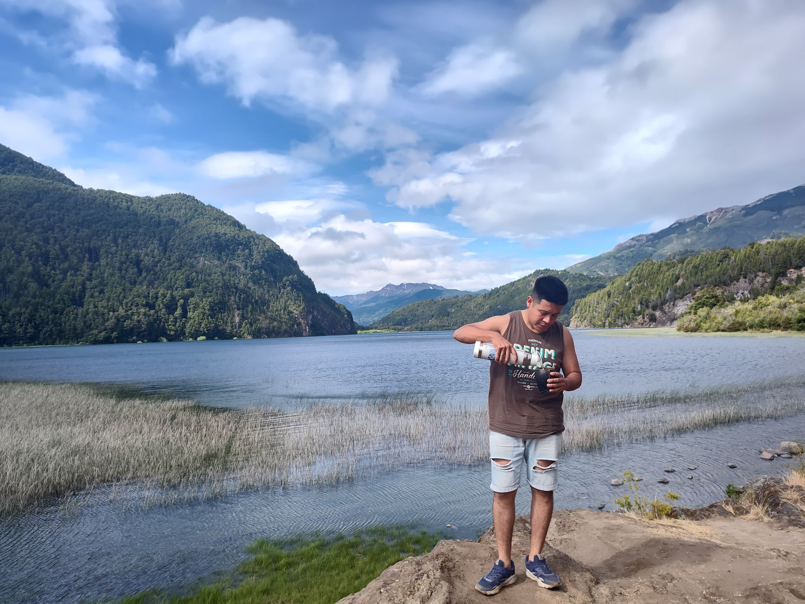

¿QUIENES SOMOS?
Hola, me presento, mi nombre es Bruno, soy un apasionado de muchas cosas en la vida, y entre muchas de ellas, el mate es una. Por eso decidi comenzar este gran proyecto con muchos animos de mostrar un poco la pasion que siento, y que sentimos los argentinos por el mate, ese mate que une fronteras. Agradezco a todos lo que colaboran con este emprendiemiento, sepan que de mi parte siempre van a recibir un trato cordial. Muchas gracias y saludos, por buenos mates.